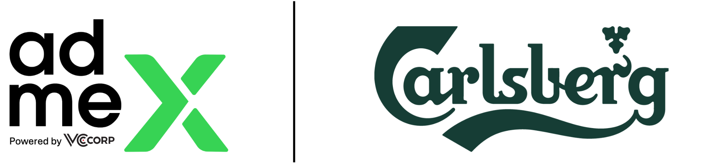
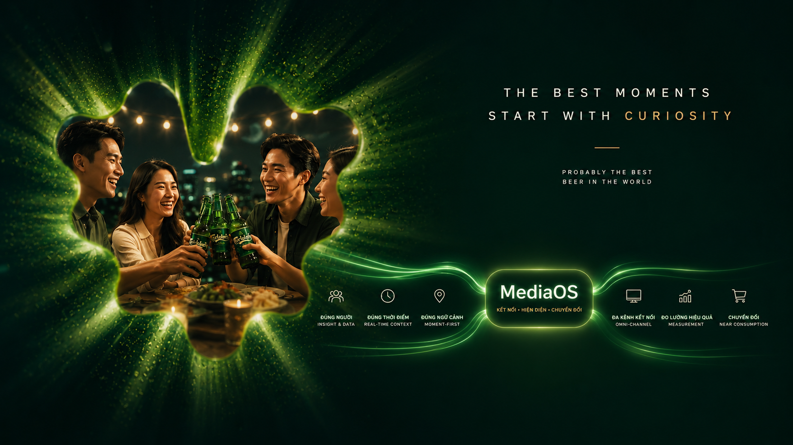

01
Hiện diện đúng ngữ cảnh
Đưa Carlsberg vào những môi trường phù hợp với hình ảnh thương hiệu và dịp thưởng thức bia.
- Premium content & lifestyle
- DOOH tại khu vực văn phòng, F&B, giải trí
- Hạn chế ngữ cảnh không phù hợp với ngành hàng

MediaOS giúp Carlsberg hiện diện đúng người, đúng thời điểm và đúng ngữ cảnh tiêu dùng, từ xây dựng hình ảnh thương hiệu đến kích hoạt gần điểm tiêu dùng.
Trong ngành bia, lựa chọn thương hiệu thường được hình thành bởi bối cảnh xã hội: sau giờ làm, xem bóng đá, gặp bạn bè, dùng bữa, du lịch hoặc tham gia sự kiện. MediaOS giúp Carlsberg kết nối các bối cảnh này thành một hành trình truyền thông có kiểm soát, có đo lường và có khả năng kích hoạt gần thời điểm tiêu dùng.
Đưa Carlsberg vào những môi trường phù hợp với hình ảnh thương hiệu và dịp thưởng thức bia.
Liên kết nội dung, di chuyển, không gian đô thị và điểm tiêu dùng để tạo độ phủ xuyên suốt.
Tập trung vào nhóm người dùng phù hợp, độ tuổi hợp pháp và thời điểm có xác suất lựa chọn thương hiệu cao.
Vietnam MediaOS là hạ tầng vận hành media kết nối inventory, dữ liệu, đo lường, báo cáo, quy trình vận hành, AI, nhà sáng tạo nội dung và chuyển đổi thương mại trên cùng một logic thống nhất. Với Carlsberg, MediaOS được đo may để phục vụ các dịp tiêu dùng bia có giá trị cao, có trách nhiệm và phù hợp với hình ảnh thương hiệu.
Cơ hội của Carlsberg nằm ở khả năng sở hữu những social moments có giá trị: khi người tiêu dùng muốn kết nối, chia sẻ, ăn mừng hoặc tận hưởng một trải nghiệm đáng nhớ.
Tan làm là thời điểm chuyển đổi từ áp lực công việc sang kết nối xã hội. Đây là không gian tự nhiên để Carlsberg hiện diện với thông điệp tinh tế.
Bóng đá tạo ra cảm xúc tập thể và tần suất tụ họp cao. MediaOS giúp Carlsberg bám theo lịch trận, khung giờ và nội dung liên quan.
Bữa ăn, tiệc nhóm, cuối tuần và sự kiện tạo ra nhu cầu lựa chọn bia gần điểm tiêu dùng. Đây là lớp kích hoạt cần phối hợp chặt chẽ với trade.
Mỗi khoảnh khắc cần một cách tiếp cận khác nhau: xây dựng hình ảnh, tăng ghi nhớ, thúc đẩy cân nhắc hoặc kích hoạt gần điểm tiêu dùng.
Target khu văn phòng, tuyến di chuyển sau giờ làm, nội dung lifestyle và địa điểm F&B phù hợp.
Kích hoạt theo lịch trận, khung giờ trước trận và sau trận, kết nối content thể thao với DOOH & mobility.
Hiện diện trong ngữ cảnh nhà hàng, quán ăn, café-bar và nội dung gợi ý trải nghiệm cuối tuần.
Tăng cường sự hiện diện tại các mùa lễ hội, âm nhạc, du lịch và dịp ăn mừng cuối năm.
Với Carlsberg, từng network được sử dụng theo vai trò rõ ràng: tạo cảm hứng, tăng ghi nhớ, đồng hành di chuyển, hoặc kích hoạt gần điểm tiêu dùng.
Premium Content Network
Mobility Journey Network
Urban Reach Network
Near Consumption Network

Creative Approach của Carlsberg nên giữ tinh thần premium, trưởng thành và có trách nhiệm. Mỗi ngữ cảnh cần một thông điệp vừa đủ gợi cảm xúc, vừa không cổ vũ tiêu dùng quá mức.
Dùng cho nội dung lifestyle, DOOH khu văn phòng và mobility sau giờ làm.
Dùng cho lịch trận, video highlight, native content thể thao và retargeting trước giờ bóng lăn.
Dùng cho social gathering, cuối tuần và các nội dung gợi ý điểm hẹn.
Dùng cho F&B context, food pairing và các điểm tiêu dùng gần trade.
Thay vì triển khai dàn trải, Carlsberg có thể thiết kế các lớp media theo chu kỳ: always-on để giữ hiện diện, burst để tăng tốc mùa vụ và signature moments để tạo dấu ấn thương hiệu.
Ăn mừng, gặp gỡ, biếu tặng và những bữa tiệc đầu năm.
Cuối tuần, du lịch ngắn ngày, F&B và những cuộc gặp ngoài trời.
Tăng tốc theo lịch thể thao, sự kiện và nhu cầu tụ họp nhóm.
Tiệc công ty, bạn bè, gia đình và các dịp tổng kết cuối năm.
Cấu trúc này giúp Carlsberg phân bổ đầu tư theo vai trò: duy trì hình ảnh thương hiệu, tăng tốc mùa vụ và chiếm lĩnh những khoảnh khắc có giá trị cao.
Duy trì sự hiện diện thương hiệu trong các nội dung và điểm chạm phù hợp quanh năm.
Tăng tốc truyền thông theo mùa vụ: bóng đá, Tết, lễ hội, cuối tuần, du lịch và year-end.
Tạo các chiến dịch có dấu ấn riêng tại những thời điểm Carlsberg muốn sở hữu mạnh nhất.
Từ nhận diện thương hiệu đến kích hoạt gần hành vi lựa chọn, toàn bộ hệ sinh thái được vận hành theo một logic thống nhất: đúng cuộc vui, đúng ngữ cảnh, đúng trách nhiệm.